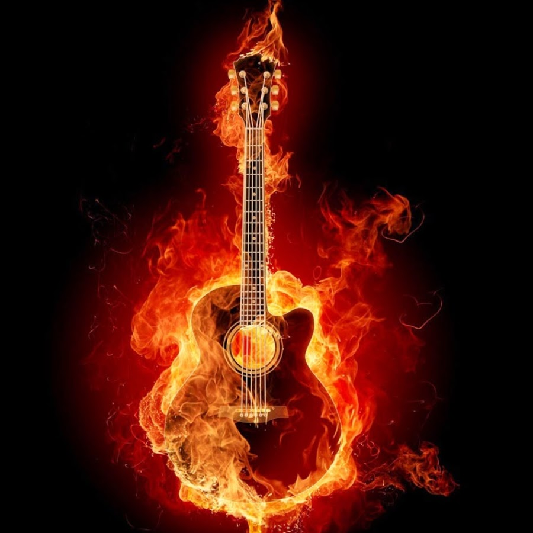

≈вген ѕродакшин
что такое гитара?
√итара Ч струнный щипковый музыкальный инструмент, один из самых распространЄнных в мире. ѕримен€етс€ в качестве аккомпанирующего инструмента во многих музыкальных стил€х, а также как сольный классический инструмент. явл€етс€ основным инструментом в таких стил€х музыки, как блюз, кантри, фламенко, рок-музыка и многих формах попул€рной музыки. »зобретЄнна€ в XX веке электрическа€ гитара оказала сильное воздействие на массовую культуру.
»сполнитель на гитаре называетс€ гитарист. „еловек, изготовл€ющий и ремонтирующий гитары, называетс€ гитарный мастер или лютье.
